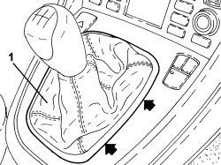
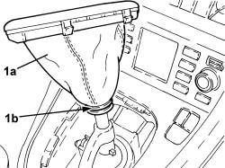

2125C02 GEAR CONTROL LEVER OUTER GAITER R R
- Path
- Procedures > 21 GEARBOX UNIT > 2125 MANUAL GEARBOX EXTERNAL CONTROLS - R.R. > 2125C MANUAL GEARBOX EXTERNAL CONTROL (CABLES) > 2125C02 GEAR CONTROL LEVER OUTER GAITER R R
- Kind
- repair procedure (removal / refitting; the operation number is the code)
- Applies to
- all engines; all production periods
- Interactive page
- https://sloeber94.github.io/elrnDB-fCrm/en/#/194004011
Applies to: engines: 2.2, 1.9 JTD 16v, 2.4 JTD 20v; all production periods; only with equipment: AUTOMATIC TRANSMISSION
- Refer to:
Applies to: engines: 1.8, 2.2, 1.9 JTD 8v, 1.9 JTD 16v; all production periods
 Removing
Removing
 Refitting
Refitting1. Manually release the surround for the gear lever boot at the points shown in the diagram and remove it from the trim.

Applies to: engines: 1.8, 2.2, 1.9 JTD 8v, 1.9 JTD 16v; all production periods
Op. 2125C24 GEAR LEVER KNOB - R + R
1. Lift up the gear lever boot (1a), cut the band (1b) and remove it complete with surround.

Applies to: engines: 1.8, 2.2, 1.9 JTD 8v, 1.9 JTD 16v; all production periods
Refitting
Removing- Place the gear lever boot in position and secure it using a new band.
- Place the surround in position and secure it to the trim using the retaining clips.